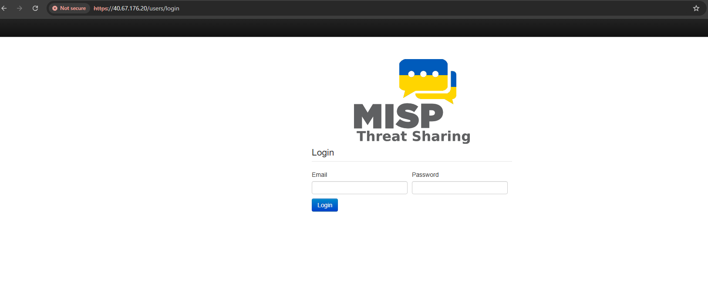
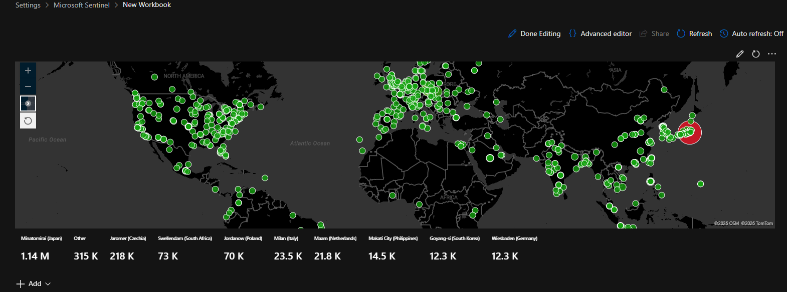

Deployed a MISP threat intel platform in Docker on Ubuntu and automated delivery into Microsoft Sentinel via an Azure Function — 241K indicators now feeding the SIEM on a timer.

Deployed an intentionally exposed Windows VM in Azure, wired it into Microsoft Sentinel, and visualized 1M+ live attack events on a custom geo-IP attack map.
Currently in the works. Check back soon.